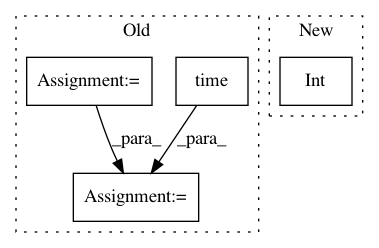

b65560304dc61e63fa45e5a26fee930661c6e998,ssd/engine/trainer.py,,do_train,#Any#Any#Any#Any#Any#Any#Any#Any#Any#,48
Before Change
max_iter = len(data_loader)
start_iter = arguments["iteration"]
start_training_time = time.time()
trained_time = 0
tic = time.time()
end = time.time()
for iteration, (images, targets, _) in enumerate(data_loader, start_iter):
iteration = iteration + 1
arguments["iteration"] = iteration
scheduler.step()
images = images.to(device)
targets = targets.to(device)
loss_dict = model(images, targets=targets)
// reduce losses over all GPUs for logging purposes
loss_dict_reduced = reduce_loss_dict(loss_dict)
losses_reduced = sum(loss for loss in loss_dict_reduced.values())
loss = sum(loss for loss in loss_dict.values())
optimizer.zero_grad()
loss.backward()
optimizer.step()
trained_time += time.time() - end
end = time.time()
if iteration % args.log_step == 0:
eta_seconds = int((trained_time / iteration) * (max_iter - iteration))
log_str = [
"iter: {:06d}, lr: {:.5f}, cost: {:.2f}s, eta: {}".format(iteration,
optimizer.param_groups[0]["lr"],
time.time() - tic, str(datetime.timedelta(seconds=eta_seconds))),
"total_loss: {:.3f}".format(losses_reduced.item())
]
for loss_name, loss_item in loss_dict_reduced.items():
log_str.append("{}: {:.3f}".format(loss_name, loss_item.item()))
log_str = ", ".join(log_str)
// TODO: use MetricLogger to log
logger.info(log_str)
if summary_writer:
global_step = iteration
After Change
meters.update(time=batch_time)
if iteration % args.log_step == 0:
eta_seconds = meters.time.global_avg * (max_iter - iteration)
eta_string = str(datetime.timedelta(seconds=int(eta_seconds)))
logger.info(
meters.delimiter.join([
"iter: {iter:06d}",
In pattern: SUPERPATTERN
Frequency: 3
Non-data size: 4
Instances
Project Name: lufficc/SSD
Commit Name: b65560304dc61e63fa45e5a26fee930661c6e998
Time: 2019-06-23
Author: luffy.lcc@gmail.com
File Name: ssd/engine/trainer.py
Class Name:
Method Name: do_train
Project Name: probcomp/bayeslite
Commit Name: 3f2ce7b3847950a299e25861b20b5964f117daab
Time: 2017-07-12
Author: michael_truell@horacemann.org
File Name: tests/test_loom_metamodel.py
Class Name:
Method Name: test_loom_three_var
Project Name: andresriancho/w3af
Commit Name: a0a4fd099e664bcbbd207df1368e9ce8d947a407
Time: 2018-07-21
Author: andres.riancho@gmail.com
File Name: w3af/core/controllers/core_helpers/status.py
Class Name: CoreStatus
Method Name: get_progress_percentage